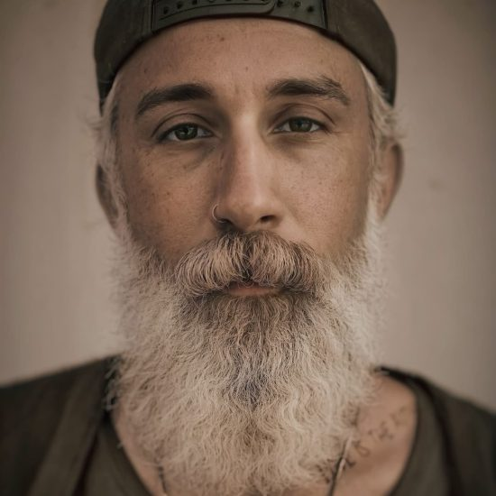

Psycho-Spiritual Mentorship
Psycho-Spiritual Mentorship is a holistic approach to personal growth that integrates psychological principles with spiritual exploration. It is designed to help individuals address emotional traumas, develop self-awareness, and cultivate inner healing through both practical and spiritual practices.
This form of mentorship guides people in understanding their inherent goodness, fostering authenticity, and embracing radical self-accountability. It emphasizes emotional and spiritual practices tailored to each person’s unique journey, encouraging sustainable personal growth and deeper connection to the world around them.
Rather than offering fixed promises, Psycho-Spiritual Mentorship invites participants to engage actively in their own wellness journey. Through reflective conversation, creative expression, and spiritual guidance, this process opens pathways for healing, personal empowerment, and meaningful transformation.
Sessions can be individual or for couples and families, taking place in person or virtually, and are designed to create lasting change in a supportive, compassionate environment.
Jaymee & Lacee

— About Mentorship w/Jaymee
"It's a lot like being a weekly guest on my podcast!"

About Jaymee
Jaymee Carpenter is a multifaceted artist, mental health professional and storyteller whose journey has been marked by a deep exploration of love, creativity, destruction and personal growth.
Born and raised in Southern California, Jaymee’s early years were infused with a love for music, leading him to become a skilled musician and composer. His passion for the arts didn’t stop at music; it expanded into production, filmmaking, and podcasting, where he found a unique voice that resonates with many.
Jaymee’s life has been a testament to the transformative power of love, a theme that he weaves into his work across various mediums. As the creator and host of the podcast “Love Is The Author,” Jaymee shares intimate stories and insights that delve into the complexities and beauty of human relationships. His podcast is a space where listeners and guests alike find solace, inspiration, and a deeper understanding of what it means to love and be loved. Jaymee also engages with a diverse array of guests, from iconic spiritual teachers to legendary musicians, actors, and artists, offering a platform for voices that challenge, uplift, and enrich the conversation on love. His unique ability to blend personal narrative with universal themes has made the podcast a go-to resource for those seeking connection and meaning in their lives. His work is a celebration of love in all its forms, making him a cherished voice in contemporary media.
Beyond his podcast, Jaymee has 15 years of professional experience as a clinician in mental health/addiction centers. He transitioned from the medical model of rehabilitation into private practice as a Spiritual Mentor in 2020. In this new capacity as an alternative to traditional therapy, Jaymee combines his extensive knowledge of psychology with a profound understanding of spiritual principles and personal experiences.
Jaymee Carpenter’s life and work are a reminder that love is not just a feeling but a powerful force that can shape and define our existence. Through his art, his podcast, and his mentorship, he invites us all to embark on a journey of self-discovery, creativity, and, above all, love.
About Lacee
Lacee Dilmore has been dedicated to the field of mental health since 2007, beginning her career at just 21 years old. She started at Passages Malibu, a mental health and addiction treatment center, where she was promoted twice during her seven years there. While working at Passages, she pursued her studies to become a licensed marriage and family therapist (MFT).
In 2015, Lacee transitioned to Acadia Malibu (now Oro House) as a primary therapist, where she also helped cultivate a culture of love, fun, and respect that drew clients to the program. It was at Acadia that Lacee deepened her understanding of her strengths and discovered her passion for service work. Her intuition, ethics, creativity, and boundless compassion became the cornerstones of her success in mental health and addiction treatment.
In 2017, Lacee left Acadia and co-founded Good Heart Recovery, an intensive outpatient program in Santa Barbara, with her partner Jaymee Carpenter. As both clinical director and primary therapist, she played a key role in daily operations while working closely with clients. Around the same time, Lacee became a licensed MFT. After three years at Good Heart, she decided to pursue a private practice in 2020, having gathered invaluable insights into the most effective and sustainable methods for healing.
Through her professional and personal experiences, Lacee recognized that cultivating a spiritual relationship with oneself and the world is the most powerful pathway to healing.
Her private practice has since evolved into a unique specialty she calls “psycho-spiritual mentorship,” where she blends her deep therapeutic knowledge with spiritual guidance. Far beyond her professional accomplishments, Lacee is known for her dynamic approach—spacious, playful, and profound. Her life is a devotion to spiritual practice and service, offering an experience that is truly one-of-a-kind.
Jaymee compassionately meets people in a radical unconditional regard for exactly where they find themselves that is palpable to those he serves. He is guided by ruling principles of loving-kindness and mindfulness in a way that assists people who are struggling with addictive behaviors and disconnection from others and from themselves. He is unabashedly human, generous with his energy, and gracefully dances with his mentees through suffering, spirituality, and the human condition.
Aeron H.When I met Jaymee, I was on the verge of giving up. Drug and alcohol withdrawal had kicked my ass to hell and back. I’d been working with a therapist and getting absolutely nowhere for months. When I met Jaymee, he took a week to get to know me and learn about my situation before helping connect me with a rehab that saved my life. He believed in me when I didn’t believe in myself. I have the utmost respect for him and today I am 100% drug free.
Shmuel E.How do sessions work?
In Psycho-Spiritual Mentorship, sessions are typically structured to provide a safe and supportive space for deep reflection, healing, and personal growth. Here’s how the sessions generally work:
Initial Consultation: The process usually begins with a free consultation (often around 20 minutes) to ensure a good fit between the mentor and the participant. This allows both parties to explore the participant’s needs and goals and establish whether the mentorship approach aligns with those objectives.
What is the Session Structure?
Storytelling and Exploration: Each session often starts with a deep dive into the participant’s life story, current challenges, or specific issues they want to address. The mentor listens with compassion and offers fresh perspectives on past experiences, helping participants reframe situations in a healthier light.
Spiritual and Emotional Practices: Based on the conversation, the mentor may introduce practical spiritual or emotional exercises tailored to the participant’s needs. These could include mindfulness techniques, meditation, self-reflection, journaling, or creative practices.
Self-Accountability and Empowerment: A key focus of the sessions is helping participants develop radical self-accountability. The mentor works with the participant to foster a sense of empowerment, encouraging personal responsibility in their healing and growth process.
Between Sessions: Participants are often given spiritual or emotional practices to work on between sessions. These practices are designed to be simple yet powerful tools for everyday life, helping individuals integrate the lessons from their mentorship into their daily routines.
Long-Term Engagement: While sessions can be targeted to specific issues, many people engage in long-term mentorship for sustained personal growth and ongoing support. Sessions may be weekly or bi-weekly, depending on the participant’s needs.
Flexible Formats: Sessions can be conducted in person or virtually (via Zoom), offering flexibility for participants regardless of location. Some mentors also provide immersive, long-term sessions for more intensive support.
Overall, the aim is to create a nourishing environment where individuals can explore their emotional and spiritual selves, cultivate deeper awareness, and move towards a more authentic and sustainable way of being.
What are potential outcomes of sessions?
Psycho-Spiritual Mentorship can lead to a variety of transformative outcomes, depending on the individual’s unique needs and journey. Some potential outcomes include:
Emotional Healing: Participants may experience deep emotional healing, releasing past traumas or unresolved emotions. The mentorship can help them process grief, anger, fear, or other emotions in a healthy way, allowing for a sense of closure and peace.
Increased Self-Awareness: Through guided self-reflection, participants often gain greater clarity about their thoughts, behaviors, and emotional patterns. This heightened self-awareness can lead to more intentional decision-making and healthier responses to life’s challenges.
Spiritual Growth: Many people discover or deepen their spiritual connection through this process, whether through meditation, mindfulness, or other spiritual practices. Participants often gain a stronger sense of purpose and meaning in their lives, feeling more aligned with their values and beliefs.
Radical Self-Acceptance: A core outcome is learning to trust oneself and embrace one’s inherent worth. Participants often report a reduction in feelings of inadequacy, shame, or self-doubt, leading to greater confidence and a more compassionate relationship with themselves.
Improved Relationships: The personal growth fostered in these sessions often translates to improved relationships with others. Participants may develop better communication skills, more empathy, and a deeper capacity for love and connection in their interactions with friends, family, and partners.
Tools for Coping: The mentorship provides practical emotional and spiritual tools that participants can use in their daily lives to manage stress, anxiety, and other challenges. These tools can help create more resilience and balance in navigating life’s uncertainties.
Empowerment and Accountability: Participants often feel empowered to take control of their personal growth and healing. With a focus on radical self-accountability, they develop a sense of ownership over their well-being and are encouraged to make meaningful, lasting changes in their lives.
Creative Expression and Joy: Some individuals experience an awakening of their creative potential or rediscover joy in everyday life. The mentorship encourages playful exploration of one’s inner self, which can lead to a renewed sense of vitality and creativity.
Holistic Well-Being: Ultimately, the goal is a more integrated sense of well-being—emotionally, mentally, and spiritually. Participants often feel more balanced, centered, and connected, not just to themselves but to the world around them.
These outcomes can vary, but the overarching aim is to support participants in leading more authentic, fulfilling, and spiritually grounded lives.
Working with Jaymee has radically altered, and benefited, the trajectory of my life. He is gentle and patient, but honest and no bullshit. He helps mirror to you what is often too painful or near impossible to view alone, holding your process without judgment and without arrogance, arming you with actual practical tools to initiate real meaningful change. I have been so fortunate to offer a better me to my children and anyone else in my orbit. Getting to know him is getting to know yourself in profound ways.
Lottie D.